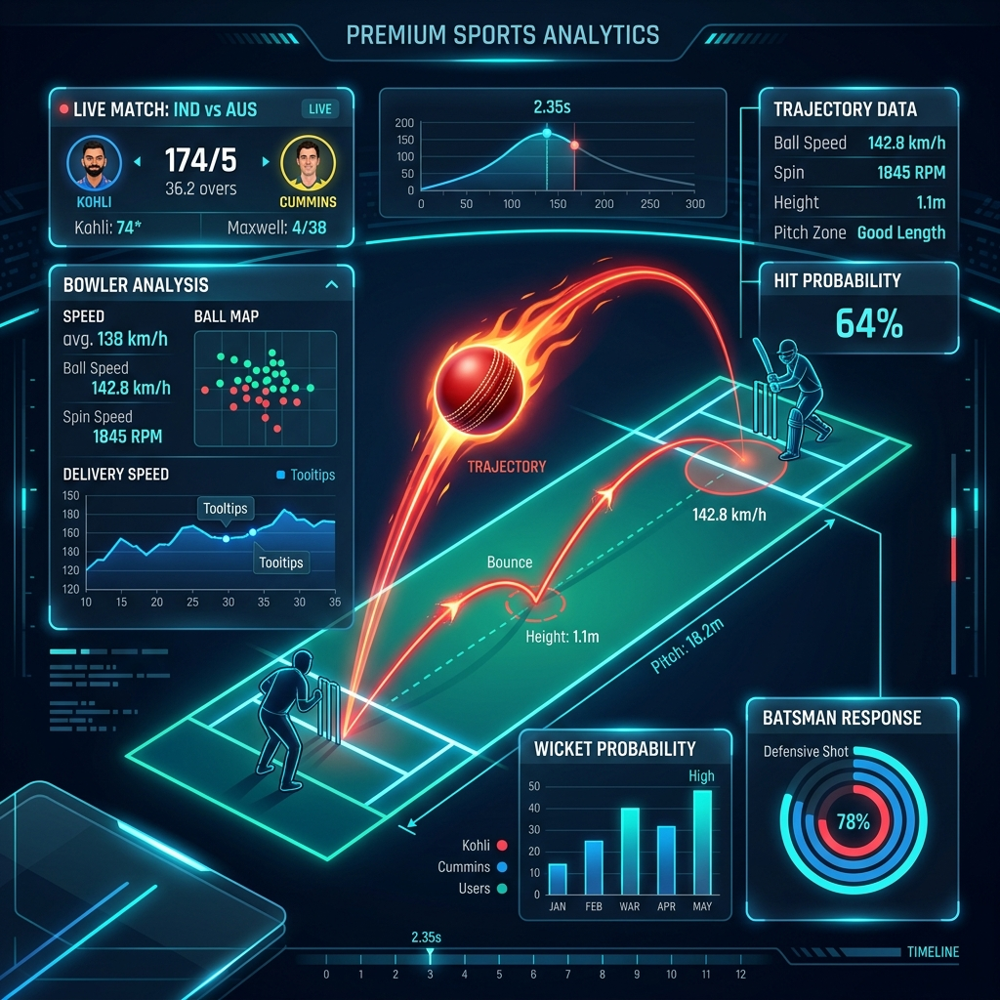

Premium Sports Analytics
AI-driven predictive intelligence
🏏 Predict Cricket Like Never Before
AI-powered match prediction with world cup simulation and real-time insights. Turn data into winning decisions, one match at a time.

293
Predictive features
XGBoost
AI engine
1000+
Simulations
90%+
Accuracy
Match Intelligence
Data-driven predictions with a premium sports analytics dashboard.
This interface is designed for clarity, speed, and high-level insight. Every prediction and simulation is presented with elegant glass surfaces, smooth transitions, and a focused premium aesthetic.
Predictive depth
293 advanced variables
Tournament vision
1000+ simulated paths
Accuracy focus
90%+ predicted reliability